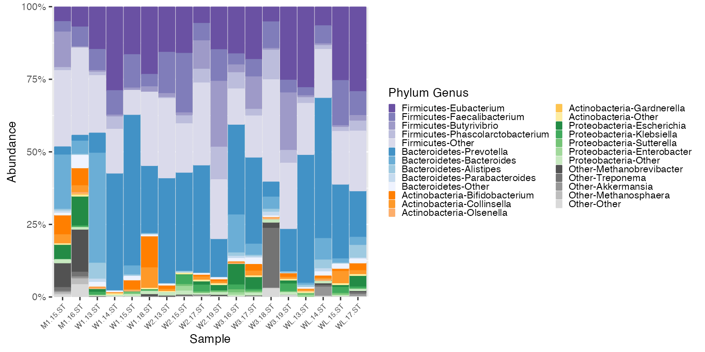
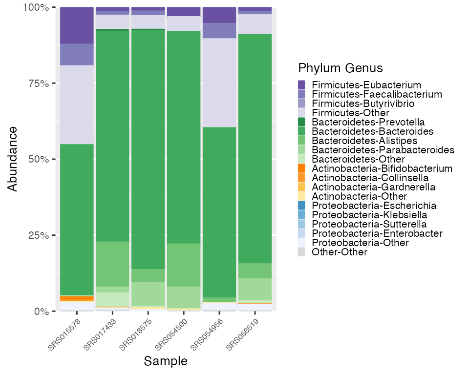

Curated Metagenomic Data
Erin Dahl
July 21, 2022
Source:vignettes/microshades-CMD.Rmd
microshades-CMD.RmdCurated Metagenomic Data Vignette
For this tutorial, we will be exploring human microbiome profiles from the Curated Metagenomic Data library. We will use microshades functions to examine stool samples of school age children and compare samples from different locations.
This data is available in the curatedMetagenomicData library. To
download use
BiocManager::install("curatedMetagenomicData").
Learn more about the Curated Metagenomic Data here.
Load datasets and convert to phyloseq objects
# Load the CMD data
britol = BritoIL_2016.metaphlan_bugs_list.stool()
ps_britol = ExpressionSet2phyloseq (britol)## Warning: `data_frame()` was deprecated in tibble 1.1.0.
## Please use `tibble()` instead.
## This warning is displayed once every 8 hours.
## Call `lifecycle::last_lifecycle_warnings()` to see where this warning was generated.
HMP = HMP_2012.metaphlan_bugs_list.stool()
ps_HMP = ExpressionSet2phyloseq (HMP)The ps_britol object contains 112 samples, and
ps_HMP contains 141 samples. To focus on a smaller sample
size, use phyloseq function subset_samples(). In this
scenario, only schoolage subjects samples will be included.
# Subset the samples
ps_britol_sub <- subset_samples(ps_britol,age_category == "schoolage")
ps_HMP_sub <- subset_samples(ps_HMP,age_category == "schoolage")Now ps_britol_sub object contains 18 samples, and
ps_HMP_sub contains 6 samples. Begin using microshades
functions to evaluate abundance and apply advanced color
organization.
Apply the microshades functions to the Britol dataset.
To orient the shades from the top darkest to lightest instead of from
the bottom darkest to lightest, use the
top_orientation = TRUE parameter in the
create_color_dfs()
# Use microshades function prep_mdf to agglomerate, normalize, and melt the phyloseq object
mdf_britol_pre <- prep_mdf(ps_britol_sub)
# Create a color object for the specified data
color_objs_britol <- create_color_dfs(mdf_britol_pre, top_orientation = TRUE)
# Extract
mdf_britol<- color_objs_britol$mdf
cdf_britol <- color_objs_britol$cdfPlot Britol
The dataframe mdf_britol contains sample data and
abundance info. The dataframe cdf_britol stores the color
mapping information used for plotting.
plot_microshades produces a stacked barplot with ordered
subgroup taxonomy. The darkest shade is the most abundant, and the
lightest shade is the least abundant. (excluding the “other” subgroup
from each of the selected groups)
plot_britol <- plot_microshades(mdf_britol, cdf_britol)
plot_britol + scale_y_continuous(labels = scales::percent, expand = expansion(0)) +
theme(legend.key.size = unit(0.2, "cm"), text=element_text(size=10)) +
theme(axis.text.x = element_text(size= 6)) 
Reassign colors as desired
To change the colors assignment, use the function
color_reassign to specify the groups and colors in order of
reassignment. For example, we can change the color assignment of
Bacteroidetes to micro_green and the color assignment of
Proteobacteria to micro_blue
new_cdf_britol <- color_reassign(cdf_britol,
group_assignment = c("Bacteroidetes", "Proteobacteria"),
color_assignment = c("micro_green", "micro_blue"))
new_plot_britol <- plot_microshades(mdf_britol, new_cdf_britol)
new_plot_britol + scale_y_continuous(labels = scales::percent, expand = expansion(0)) +
theme(legend.key.size = unit(0.2, "cm"), text=element_text(size=10)) +
theme(axis.text.x = element_text(size= 6)) 
Apply the microshades functions to the HMP dataset.
# Use microshades function prep_mdf to agglomerate, normalize, and melt the phyloseq object
mdf_HMP_pre <- prep_mdf(ps_HMP_sub)
# Create a color object for the specified data
color_objs_HMP <- create_color_dfs(mdf_HMP_pre)
# Extract
mdf_HMP <- color_objs_HMP$mdf
cdf_HMP <- color_objs_HMP$cdfPlot HMP
plot_HMP <- plot_microshades(mdf_HMP, cdf_HMP)
plot_HMP + scale_y_continuous(labels = scales::percent, expand = expansion(0)) +
theme(legend.key.size = unit(0.2, "cm"), text=element_text(size=10)) +
theme(axis.text.x = element_text(size= 6))Examine/Compare Legends
HMP_legend <- get_legend(plot_HMP)
britol_legend <- get_legend(new_plot_britol)
# Plot The HMP legend on the left, and the britol legend on the right
plot_grid(HMP_legend, britol_legend)
Each legend is configured to reflect the dataset of the plot. Notice that the HMP and Britol legends are similar, but not the exact same, due to different top abundances for genera in each phylum.
Use Britol legend for HMP Plot
If the plots are being compared, it may be confusing visually if the
genus shading colors account for different genera between the two plots.
In this case, the function match_cdf() can apply the color
factoring information from one processed mdf to a different, unprocessed
mdf.
To use the Britol color legend with the HMP data, apply the Britol color factoring to the HMP data.
mdf_HMP_matched <- match_cdf(mdf_HMP_pre, mdf_britol)
# Use the Britol cdf for color reference
plot_HMP_matched <- plot_microshades(mdf_HMP_matched, new_cdf_britol)
plot_HMP_matched + scale_y_continuous(labels = scales::percent, expand = expansion(0)) +
theme(legend.key.size = unit(0.2, "cm"), text=element_text(size=10)) +
theme(axis.text.x = element_text(size= 6))